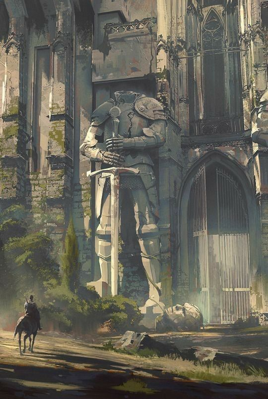
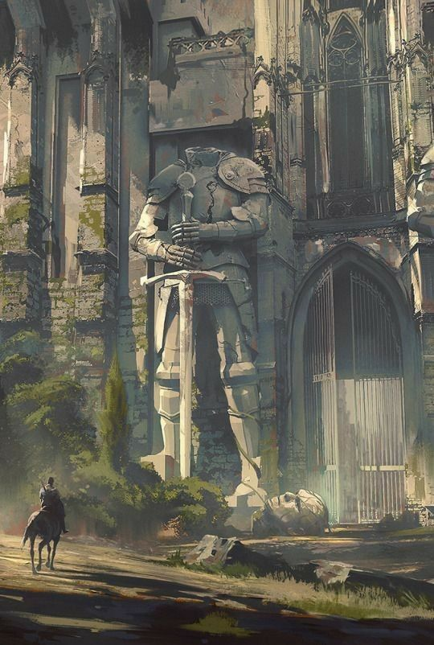

Dicas Para Criação De Um Sistema Próprio De RPG
╬╬═════════❮◆❯═════════╬╬
Já pensou em criar um sistema próprio de RPG? O mundo dos RPGs é repleto de sistemas
diversos, voltados cada um para um tema ou estilo que reflete, diretamente, nas suas
mecânicas e propostas. São esses elementos que diferem os sistemas uns dos outros, um jogo
de Vampiro: A Máscara, por exemplo, será completamente diferente de um jogo de Dungeons and
Dragons.
Geralmente, esses sistemas são limitados apenas pela imaginação. Ou seja, se você pensar em
um tema, provavelmente vai ter um sistema equivalente para ele. Mas uma alternativa, caso
você não encontre um do seu gosto ou na temática exata é criar um sistema próprio de RPG,
com regras e temáticas da sua autoria!
Acompanhe as 5 dicas para você criar um sistema próprio de RPG!
Vai criar um sistema próprio de RPG: quais são as regras?
╬╬═════════❮◆❯═════════╬╬
Se você possui interesse pela criação de algo mais pessoal sobre, é importante começar a definir algumas coisas. Em todo sistema, as regras são a alma e a espinha de um RPG, sendo aquilo que o sustenta. Definir quais as regras é vital para começar a arquitetar seu sistema, um exemplo é definir como um jogador obtém sucesso naquela atividade que ele estiver realizando.
 



Quais e quantos atributos?
╬╬═════════❮◆❯═════════╬╬
Geralmente, como informação básica do personagem, os atributos são os aspectos gerais que
definem suas capacidades comuns. Defina como capacidades físicas, intelectuais, sociais ou
sobrenaturais se traduzem na ficha de personagem.
Quais tipos e quantas perícias?
╬╬═════════❮◆❯═════════╬╬
Perícias são nada mais que diferentes tarefas específicas que podem ser realizadas dentro do jogo e dão conta de ações mais gerais ou específicas. Por exemplo, perícia de escalada permite subir montanhas, mas também pode ser usada para ultrapassar obstáculos menores que exigem subir alguma estrutura.
Vantagens, desvantagens, dons, talentos, aptidões: o que e como utilizar?
╬╬═════════❮◆❯═════════╬╬
Para além das ações, um sistema de RPG também deve incluir elementos que possam brincar com
a própria mecânica de um personagem. Para isso, existem essas características ou habilidades
extraordinárias que não só servem mecanicamente, mas auxiliam os seus jogadores na hora de
definir as particularidades dos personagens.
Por exemplo, um personagem com uma desvantagem na visão, como ser caolho ou ter catarata,
sofre penalidades diferentes do que outros que têm a visão plena.
Magia, psionismo, sobrenatural: quais as possibilidades de poderes dos personagens?
╬╬═════════❮◆❯═════════╬╬
A partir da sua escolha de temática, adotar elementos que fogem do realismo é uma possibilidade. Determine que outros elementos são esses, se são poderes sobrenaturais, magias, poderes, entre outros.